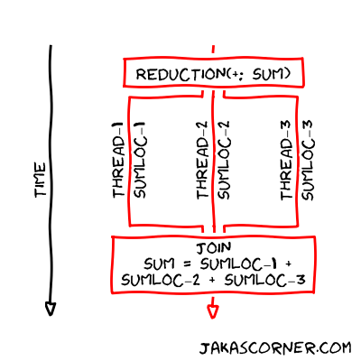

20260915-OpenMP continued¶
Parallelizing dot product continued¶
This continues from the previous notes, where we were going over different ways of vectorizing the dot function
Reductions¶
You know what else is annoying? Creating individual sum areas for each thread
Have to be careful about false sharing
Needs to be flexible to the number of threads being used
We can use the
reductionmodifier foromp parallel foras well
double dot_opt4(size_t n, const double *a, const double *b) {
double sum = 0;
omp_set_num_threads(4);
#pragma omp parallel for reduction(+:sum)
for (size_t i=0; i<n; i++)
sum += a[i] * b[i];
return sum;
}
How does it work?

from http://jakascorner.com/blog/2016/06/omp-for-reduction.html
Note that the local
sumvariable for each thread is completely normalOpenMP handles the false sharing issue without us needing to do anything
Performance of our different optimized dot products¶
|
Description |
|---|---|
|
completely serial implementation |
|
naive parallelization, with interleaving data |
|
padding and manual chunking/scheduling |
|
|
|
same as |
[6]:
!make CFLAGS='-O3 -march=native -fopenmp' -B dot
!OMP_NUM_THREADS=2 ./dot -r 4 -n 1000000
cc -O3 -march=native -fopenmp dot.c -o dot
Name flops ticks flops/tick
dot_ref 2000000 4057726 0.49
dot_ref 2000000 3455875 0.58
dot_ref 2000000 3266452 0.61
dot_ref 2000000 2771885 0.72
dot_opt1 2000000 2205205 0.91
dot_opt1 2000000 2032270 0.98
dot_opt1 2000000 1908097 1.05
dot_opt1 2000000 1858887 1.08
dot_opt2 2000000 793373 2.52
dot_opt2 2000000 827521 2.42
dot_opt2 2000000 774900 2.58
dot_opt2 2000000 758207 2.64
dot_opt3 2000000 789678 2.53
dot_opt3 2000000 827487 2.42
dot_opt3 2000000 840292 2.38
dot_opt3 2000000 885605 2.26
dot_opt4 2000000 832850 2.40
dot_opt4 2000000 797991 2.51
dot_opt4 2000000 808423 2.47
dot_opt4 2000000 782563 2.56
We see
opt1does about twice as better performance thanrefMakes sense, as we’re using two threads
opt2performs much better thanopt1The data interleaving in
opt1was causing memory contention issuesBoth threads wanting to access data on the same cache line
opt2,opt3, andopt4perform very similarlyThey were all executing the same strategy
The only difference is that the latter optimized runs were using more convienient OpenMP constructs to implement them
Vectorization Failures - Aliasing¶
OpenMP-4.0 added the omp simd construct, which is a portable way to request that the compiler vectorize code. An example of a reason why a compiler might fail to vectorize code is aliasing, which we investigate below.
[20]:
render_c('triad.c')
[20]:
void triad(int N, double *a, const double *b, double scalar, const double *c) {
for (int i=0; i<N; i++)
a[i] = b[i] + scalar * c[i];
}
[30]:
!gcc -O2 -ftree-vectorize -fopt-info-all -c triad.c
Unit growth for small function inlining: 15->15 (0%)
Inlined 0 calls, eliminated 0 functions
BB 3 is always executed in loop 1
loop 1's coldest_outermost_loop is 1, hotter_than_inner_loop is NULL
consider run-time aliasing test between *_3 and *_8
consider run-time aliasing test between *_5 and *_8
triad.c:2:20: optimized: loop vectorized using 16 byte vectors and unroll factor 2
triad.c:2:20: optimized: loop versioned for vectorization because of possible aliasing
triad.c:1:6: note: vectorized 1 loops in function.
triad.c:2:20: optimized: loop turned into non-loop; it never loops
triad.c:1:6: note: ***** Analysis failed with vector mode V2DF
triad.c:1:6: note: ***** The result for vector mode V16QI would be the same
triad.c:1:6: note: ***** Re-trying analysis with vector mode V8QI
triad.c:1:6: note: ***** Analysis failed with vector mode V8QI
triad.c:1:6: note: ***** Re-trying analysis with vector mode V4QI
triad.c:1:6: note: ***** Analysis failed with vector mode V4QI
BB 8 is always executed in loop 2
BB 3 is always executed in loop 1
loop 2's coldest_outermost_loop is 2, hotter_than_inner_loop is NULL
loop 1's coldest_outermost_loop is 1, hotter_than_inner_loop is NULL
triad.c:2:20: note: considering unrolling loop 2 at BB 11
considering unrolling loop with constant number of iterations
considering unrolling loop with runtime-computable number of iterations
triad.c:3:14: note: considering unrolling loop 1 at BB 7
considering unrolling loop with constant number of iterations
considering unrolling loop with runtime-computable number of iterations
gcc autovectorization starts at
-O3or if you use-ftree-vectorizeoptions such as -fopt-info give useful diagnostics, but are compiler-dependent and sometimes referring to assembly is useful
man gccwith search (/) is your friend
What is aliasing?¶
Is this valid code? What xs x after this call?
void triad(int N, double *a, const double *b, double scalar, const double *c) {
for (int i=0; i<N; i++)
a[i] = b[i] + scalar * c[i];
}
double x[5] = {1, 2, 3, 4, 5};
triad(2, &x[1], x, 10., x);
C allows memory to overlap arbitrarily.
Here, the
aparameter is set with the part of data ahead of the original arraySo parts of
bandcare being overwritten before
Clearly, that’s not what we ever want to happen, but compiler has to respect it
You can inform the compiler there there shouldn’t be any memory overlap using the
`restrictqualifier <https://en.wikipedia.org/wiki/Restrict>`__(C99/C11;
__restrictor__restrict__work with most C++ and CUDA compilers).
[22]:
render_c('triad-restrict.c')
[22]:
void triad(int N, double *restrict a, const double *restrict b, double scalar, const double *restrict c) {
for (int i=0; i<N; i++)
a[i] = b[i] + scalar * c[i];
}
[23]:
!gcc -O2 -march=native -ftree-vectorize -fopt-info-all -c triad-restrict.c
Unit growth for small function inlining: 15->15 (0%)
Inlined 0 calls, eliminated 0 functions
BB 3 is always executed in loop 1
loop 1's coldest_outermost_loop is 1, hotter_than_inner_loop is NULL
triad-restrict.c:2:20: optimized: loop vectorized using 32 byte vectors and unroll factor 4
triad-restrict.c:2:20: optimized: epilogue loop vectorized using 16 byte vectors and unroll factor 2
triad-restrict.c:1:6: note: vectorized 1 loops in function.
triad-restrict.c:2:20: optimized: loop turned into non-loop; it never loops
triad-restrict.c:3:17: optimized: loop turned into non-loop; it never loops
triad-restrict.c:1:6: note: ***** Analysis failed with vector mode V4DF
triad-restrict.c:1:6: note: ***** The result for vector mode V32QI would be the same
triad-restrict.c:1:6: note: ***** Re-trying analysis with vector mode V16QI
triad-restrict.c:1:6: note: ***** Analysis failed with vector mode V16QI
triad-restrict.c:1:6: note: ***** Re-trying analysis with vector mode V8QI
triad-restrict.c:1:6: note: ***** Analysis failed with vector mode V8QI
triad-restrict.c:1:6: note: ***** Re-trying analysis with vector mode V4QI
triad-restrict.c:1:6: note: ***** Analysis failed with vector mode V4QI
BB 3 is always executed in loop 1
loop 1's coldest_outermost_loop is 1, hotter_than_inner_loop is NULL
triad-restrict.c:3:14: note: considering unrolling loop 1 at BB 5
considering unrolling loop with constant number of iterations
considering unrolling loop with runtime-computable number of iterations
Notice how there is no more loop versioned for vectorization because of possible aliasing.
The complexity of checking for aliasing can grow combinatorially in the number of arrays being processed, leading to many loop variants and/or preventing vectorization.
Can also see this with the multiblock code as well: https://godbolt.org/z/P39984Ko8
Note that this does not significantly affect performance of multiblock. Why might that be?
Because the aliasing issue occurs well outside the hot loop
Aliasing is a more significant problem if, for example, the hot loop in the middle was replaced by a function call.
The key problem with “aliasing” is that loops may not be vectorized, not necessarily that the loop gets “versioned”
Aside: Warnings¶
The -Wrestrict flag (included in -Wall) can catch some programming errors
void foo(double *x) {
triad(2, x, x, 10, x);
}
[27]:
!gcc -O2 -Wall -c triad-foo.c
triad-foo.c: In function ‘foo’:
triad-foo.c:7:5: warning: passing argument 2 to ‘restrict’-qualified parameter aliases with arguments 3, 5 []8;;https://gcc.gnu.org/onlinedocs/gcc-16.2.0/gcc/Warning-Options.html#index-Wno-restrict-Wrestrict]8;;]
7 | triad(2, x, x, 10, x);
| ^~~~~
The powers of -Wrestrict are limited, however, and (as of gcc-16) do not even catch
void foo(double *x) {
triad(2, &x[1], x, 10, x);
}
Check the assembly¶
[41]:
!gcc -march=native -O2 -ftree-vectorize -c triad.c
!objdump -d --prefix-addresses -M intel triad.o
triad.o: file format elf64-x86-64
Disassembly of section .text:
0000000000000000 <triad> vmovapd xmm2,xmm0
0000000000000004 <triad+0x4> vbroadcastsd ymm3,xmm0
0000000000000009 <triad+0x9> test edi,edi
000000000000000b <triad+0xb> jle 00000000000000c3 <triad+0xc3>
0000000000000011 <triad+0x11> cmp edi,0x1
0000000000000014 <triad+0x14> je 00000000000000d0 <triad+0xd0>
000000000000001a <triad+0x1a> lea rax,[rsi-0x8]
000000000000001e <triad+0x1e> mov r8,rax
0000000000000021 <triad+0x21> sub r8,rdx
0000000000000024 <triad+0x24> cmp r8,0x10
0000000000000028 <triad+0x28> jbe 00000000000000d0 <triad+0xd0>
000000000000002e <triad+0x2e> sub rax,rcx
0000000000000031 <triad+0x31> cmp rax,0x10
0000000000000035 <triad+0x35> jbe 00000000000000d0 <triad+0xd0>
000000000000003b <triad+0x3b> lea eax,[rdi-0x1]
000000000000003e <triad+0x3e> mov r9d,edi
0000000000000041 <triad+0x41> cmp eax,0x2
0000000000000044 <triad+0x44> jbe 00000000000000fd <triad+0xfd>
000000000000004a <triad+0x4a> shr r9d,0x2
000000000000004e <triad+0x4e> vmovapd ymm1,ymm3
0000000000000052 <triad+0x52> xor eax,eax
0000000000000054 <triad+0x54> mov r8d,r9d
0000000000000057 <triad+0x57> shl r8,0x5
000000000000005b <triad+0x5b> nop DWORD PTR [rax+rax*1+0x0]
0000000000000060 <triad+0x60> vmovupd ymm0,YMMWORD PTR [rcx+rax*1]
0000000000000065 <triad+0x65> vfmadd213pd ymm0,ymm1,YMMWORD PTR [rdx+rax*1]
000000000000006b <triad+0x6b> vmovupd YMMWORD PTR [rsi+rax*1],ymm0
0000000000000070 <triad+0x70> add rax,0x20
0000000000000074 <triad+0x74> cmp rax,r8
0000000000000077 <triad+0x77> jne 0000000000000060 <triad+0x60>
0000000000000079 <triad+0x79> lea eax,[r9*4+0x0]
0000000000000081 <triad+0x81> cmp edi,eax
0000000000000083 <triad+0x83> je 00000000000000c3 <triad+0xc3>
0000000000000085 <triad+0x85> sub edi,eax
0000000000000087 <triad+0x87> mov r8d,eax
000000000000008a <triad+0x8a> mov r9d,edi
000000000000008d <triad+0x8d> cmp edi,0x1
0000000000000090 <triad+0x90> je 00000000000000b1 <triad+0xb1>
0000000000000092 <triad+0x92> vmovupd xmm4,XMMWORD PTR [rdx+rax*8]
0000000000000097 <triad+0x97> vfmadd132pd xmm3,xmm4,XMMWORD PTR [rcx+rax*8]
000000000000009d <triad+0x9d> vmovupd XMMWORD PTR [rsi+rax*8],xmm3
00000000000000a2 <triad+0xa2> mov eax,r9d
00000000000000a5 <triad+0xa5> and eax,0xfffffffe
00000000000000a8 <triad+0xa8> and r9d,0x1
00000000000000ac <triad+0xac> je 00000000000000c3 <triad+0xc3>
00000000000000ae <triad+0xae> add r8d,eax
00000000000000b1 <triad+0xb1> vmovsd xmm5,QWORD PTR [rdx+r8*8]
00000000000000b7 <triad+0xb7> vfmadd132sd xmm2,xmm5,QWORD PTR [rcx+r8*8]
00000000000000bd <triad+0xbd> vmovsd QWORD PTR [rsi+r8*8],xmm2
00000000000000c3 <triad+0xc3> vzeroupper
00000000000000c6 <triad+0xc6> ret
00000000000000c7 <triad+0xc7> nop WORD PTR [rax+rax*1+0x0]
00000000000000d0 <triad+0xd0> mov edi,edi
00000000000000d2 <triad+0xd2> xor eax,eax
00000000000000d4 <triad+0xd4> shl rdi,0x3
00000000000000d8 <triad+0xd8> nop DWORD PTR [rax+rax*1+0x0]
00000000000000e0 <triad+0xe0> vmovsd xmm0,QWORD PTR [rcx+rax*1]
00000000000000e5 <triad+0xe5> vfmadd213sd xmm0,xmm2,QWORD PTR [rdx+rax*1]
00000000000000eb <triad+0xeb> vmovsd QWORD PTR [rsi+rax*1],xmm0
00000000000000f0 <triad+0xf0> add rax,0x8
00000000000000f4 <triad+0xf4> cmp rdi,rax
00000000000000f7 <triad+0xf7> jne 00000000000000e0 <triad+0xe0>
00000000000000f9 <triad+0xf9> vzeroupper
00000000000000fc <triad+0xfc> ret
00000000000000fd <triad+0xfd> xor eax,eax
00000000000000ff <triad+0xff> xor r8d,r8d
0000000000000102 <triad+0x102> jmp 0000000000000092 <triad+0x92>
[40]:
!gcc -march=native -O2 -ftree-vectorize -c triad-restrict.c
!objdump -d --prefix-addresses -M intel triad-restrict.o
triad-restrict.o: file format elf64-x86-64
Disassembly of section .text:
0000000000000000 <triad> mov r9d,edi
0000000000000003 <triad+0x3> vmovapd xmm3,xmm0
0000000000000007 <triad+0x7> vbroadcastsd ymm2,xmm0
000000000000000c <triad+0xc> mov rdi,rdx
000000000000000f <triad+0xf> test r9d,r9d
0000000000000012 <triad+0x12> jle 000000000000009f <triad+0x9f>
0000000000000018 <triad+0x18> lea eax,[r9-0x1]
000000000000001c <triad+0x1c> cmp eax,0x2
000000000000001f <triad+0x1f> jbe 00000000000000a3 <triad+0xa3>
0000000000000025 <triad+0x25> mov r8d,r9d
0000000000000028 <triad+0x28> vmovapd ymm1,ymm2
000000000000002c <triad+0x2c> xor eax,eax
000000000000002e <triad+0x2e> shr r8d,0x2
0000000000000032 <triad+0x32> mov edx,r8d
0000000000000035 <triad+0x35> shl rdx,0x5
0000000000000039 <triad+0x39> nop DWORD PTR [rax+0x0]
0000000000000040 <triad+0x40> vmovupd ymm0,YMMWORD PTR [rcx+rax*1]
0000000000000045 <triad+0x45> vfmadd213pd ymm0,ymm1,YMMWORD PTR [rdi+rax*1]
000000000000004b <triad+0x4b> vmovupd YMMWORD PTR [rsi+rax*1],ymm0
0000000000000050 <triad+0x50> add rax,0x20
0000000000000054 <triad+0x54> cmp rax,rdx
0000000000000057 <triad+0x57> jne 0000000000000040 <triad+0x40>
0000000000000059 <triad+0x59> lea eax,[r8*4+0x0]
0000000000000061 <triad+0x61> mov edx,eax
0000000000000063 <triad+0x63> cmp r9d,eax
0000000000000066 <triad+0x66> je 000000000000009f <triad+0x9f>
0000000000000068 <triad+0x68> sub r9d,eax
000000000000006b <triad+0x6b> cmp r9d,0x1
000000000000006f <triad+0x6f> je 000000000000008f <triad+0x8f>
0000000000000071 <triad+0x71> vmovupd xmm4,XMMWORD PTR [rdi+rax*8]
0000000000000076 <triad+0x76> vfmadd132pd xmm2,xmm4,XMMWORD PTR [rcx+rax*8]
000000000000007c <triad+0x7c> vmovupd XMMWORD PTR [rsi+rax*8],xmm2
0000000000000081 <triad+0x81> mov eax,r9d
0000000000000084 <triad+0x84> and eax,0xfffffffe
0000000000000087 <triad+0x87> and r9d,0x1
000000000000008b <triad+0x8b> je 000000000000009f <triad+0x9f>
000000000000008d <triad+0x8d> add edx,eax
000000000000008f <triad+0x8f> vmovsd xmm5,QWORD PTR [rdi+rdx*8]
0000000000000094 <triad+0x94> vfmadd132sd xmm3,xmm5,QWORD PTR [rcx+rdx*8]
000000000000009a <triad+0x9a> vmovsd QWORD PTR [rsi+rdx*8],xmm3
000000000000009f <triad+0x9f> vzeroupper
00000000000000a2 <triad+0xa2> ret
00000000000000a3 <triad+0xa3> xor eax,eax
00000000000000a5 <triad+0xa5> xor edx,edx
00000000000000a7 <triad+0xa7> jmp 0000000000000068 <triad+0x68>
How do the results change if you go up and replace
-march=nativewith-march=skylake-avx512 -mprefer-vector-width=512?Is the assembly qualitatively different without
restrict(in which case the compiler “versions” the loop).
Pragma omp simd¶
An alternative (or supplement) to restrict is #pragma omp simd.
[32]:
render_c('triad-omp-simd.c')
[32]:
void triad(int N, double *a, const double *b, double scalar, const double *c) {
#pragma omp simd
for (int i=0; i<N; i++)
a[i] = b[i] + scalar * c[i];
}
[33]:
!gcc -O2 -march=native -ftree-vectorize -fopenmp -fopt-info-all -c triad-omp-simd.c
Unit growth for small function inlining: 15->15 (0%)
Inlined 0 calls, eliminated 0 functions
BB 3 is always executed in loop 1
loop 1's coldest_outermost_loop is 1, hotter_than_inner_loop is NULL
consider run-time aliasing test between *_8 and *_16
consider run-time aliasing test between *_11 and *_16
triad-omp-simd.c:4:17: optimized: loop vectorized using 32 byte vectors and unroll factor 4
triad-omp-simd.c:4:17: optimized: epilogue loop vectorized using 16 byte vectors and unroll factor 2
triad-omp-simd.c:1:6: note: vectorized 1 loops in function.
triad-omp-simd.c:4:17: optimized: loop turned into non-loop; it never loops
triad-omp-simd.c:4:17: optimized: loop turned into non-loop; it never loops
triad-omp-simd.c:1:6: note: ***** Analysis failed with vector mode V4DF
triad-omp-simd.c:1:6: note: ***** The result for vector mode V32QI would be the same
triad-omp-simd.c:1:6: note: ***** Re-trying analysis with vector mode V16QI
triad-omp-simd.c:1:6: note: ***** Analysis failed with vector mode V16QI
triad-omp-simd.c:1:6: note: ***** Re-trying analysis with vector mode V8QI
triad-omp-simd.c:1:6: note: ***** Analysis failed with vector mode V8QI
triad-omp-simd.c:1:6: note: ***** Re-trying analysis with vector mode V4QI
triad-omp-simd.c:1:6: note: ***** Analysis failed with vector mode V4QI
BB 3 is always executed in loop 1
loop 1's coldest_outermost_loop is 1, hotter_than_inner_loop is NULL
triad-omp-simd.c:4:14: note: considering unrolling loop 1 at BB 5
considering unrolling loop with constant number of iterations
considering unrolling loop with runtime-computable number of iterations
[43]:
!gcc -march=native -O2 -ftree-vectorize -fopenmp-c triad-omp-simd.c
!objdump -d --prefix-addresses -M intel triad-omp-simd.o
triad-omp-simd.o: file format elf64-x86-64
Disassembly of section .text:
0000000000000000 <triad> mov r9d,edi
0000000000000003 <triad+0x3> vmovapd xmm3,xmm0
0000000000000007 <triad+0x7> vbroadcastsd ymm2,xmm0
000000000000000c <triad+0xc> mov rdi,rdx
000000000000000f <triad+0xf> test r9d,r9d
0000000000000012 <triad+0x12> jle 000000000000009f <triad+0x9f>
0000000000000018 <triad+0x18> lea eax,[r9-0x1]
000000000000001c <triad+0x1c> cmp eax,0x2
000000000000001f <triad+0x1f> jbe 00000000000000a8 <triad+0xa8>
0000000000000025 <triad+0x25> mov r8d,r9d
0000000000000028 <triad+0x28> vmovapd ymm1,ymm2
000000000000002c <triad+0x2c> xor eax,eax
000000000000002e <triad+0x2e> shr r8d,0x2
0000000000000032 <triad+0x32> mov edx,r8d
0000000000000035 <triad+0x35> shl rdx,0x5
0000000000000039 <triad+0x39> nop DWORD PTR [rax+0x0]
0000000000000040 <triad+0x40> vmovupd ymm0,YMMWORD PTR [rcx+rax*1]
0000000000000045 <triad+0x45> vfmadd213pd ymm0,ymm1,YMMWORD PTR [rdi+rax*1]
000000000000004b <triad+0x4b> vmovupd YMMWORD PTR [rsi+rax*1],ymm0
0000000000000050 <triad+0x50> add rax,0x20
0000000000000054 <triad+0x54> cmp rax,rdx
0000000000000057 <triad+0x57> jne 0000000000000040 <triad+0x40>
0000000000000059 <triad+0x59> lea eax,[r8*4+0x0]
0000000000000061 <triad+0x61> mov edx,eax
0000000000000063 <triad+0x63> cmp r9d,eax
0000000000000066 <triad+0x66> je 000000000000009f <triad+0x9f>
0000000000000068 <triad+0x68> sub r9d,eax
000000000000006b <triad+0x6b> cmp r9d,0x1
000000000000006f <triad+0x6f> je 000000000000008f <triad+0x8f>
0000000000000071 <triad+0x71> vmovupd xmm4,XMMWORD PTR [rdi+rax*8]
0000000000000076 <triad+0x76> vfmadd132pd xmm2,xmm4,XMMWORD PTR [rcx+rax*8]
000000000000007c <triad+0x7c> vmovupd XMMWORD PTR [rsi+rax*8],xmm2
0000000000000081 <triad+0x81> mov eax,r9d
0000000000000084 <triad+0x84> and eax,0xfffffffe
0000000000000087 <triad+0x87> and r9d,0x1
000000000000008b <triad+0x8b> je 000000000000009f <triad+0x9f>
000000000000008d <triad+0x8d> add edx,eax
000000000000008f <triad+0x8f> vmovsd xmm5,QWORD PTR [rdi+rdx*8]
0000000000000094 <triad+0x94> vfmadd132sd xmm3,xmm5,QWORD PTR [rcx+rdx*8]
000000000000009a <triad+0x9a> vmovsd QWORD PTR [rsi+rdx*8],xmm3
000000000000009f <triad+0x9f> vzeroupper
00000000000000a2 <triad+0xa2> ret
00000000000000a3 <triad+0xa3> nop DWORD PTR [rax+rax*1+0x0]
00000000000000a8 <triad+0xa8> xor eax,eax
00000000000000aa <triad+0xaa> xor edx,edx
00000000000000ac <triad+0xac> jmp 0000000000000068 <triad+0x68>